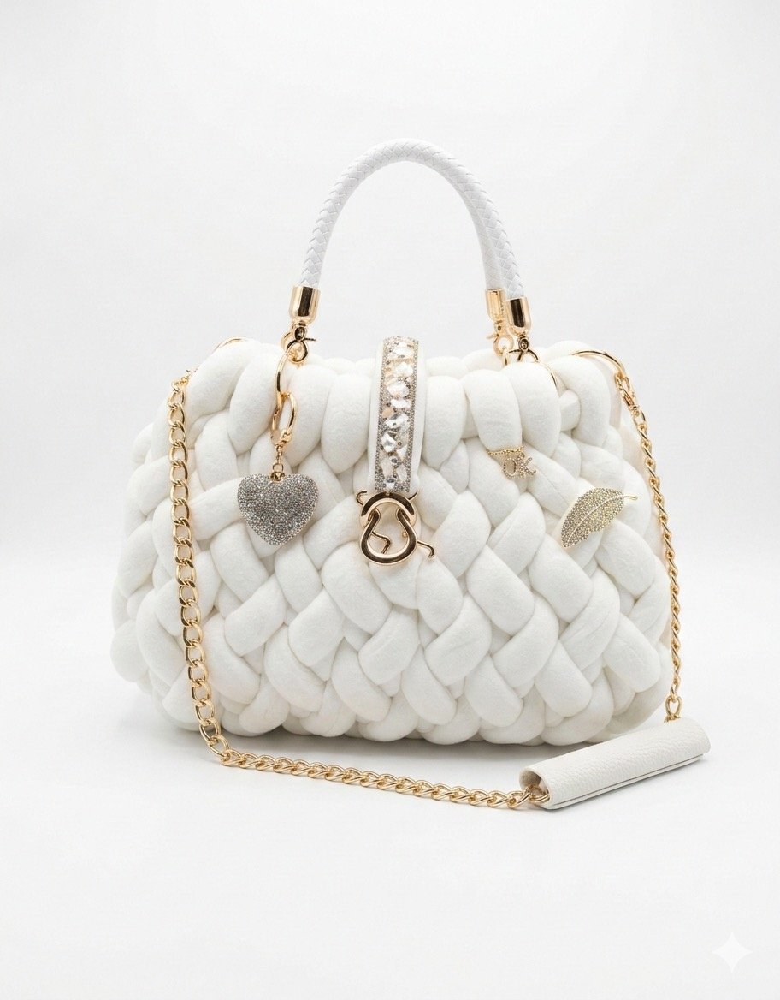
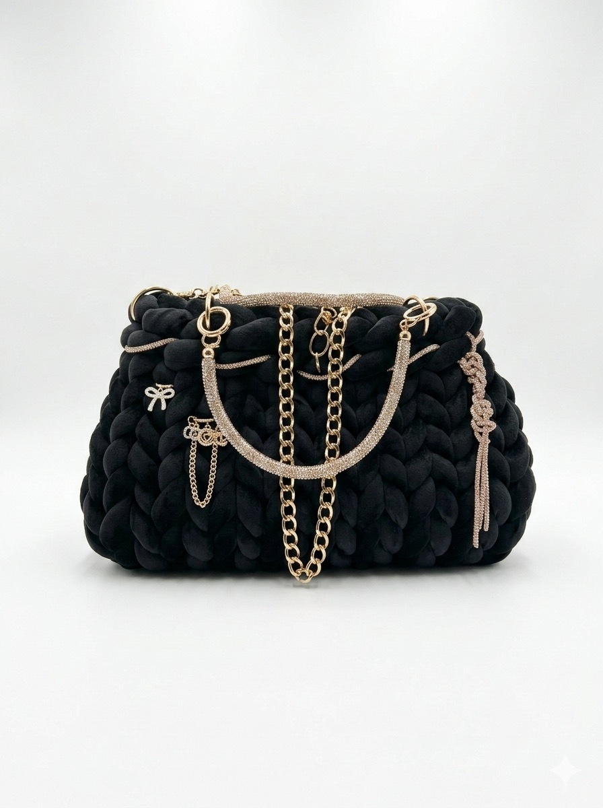
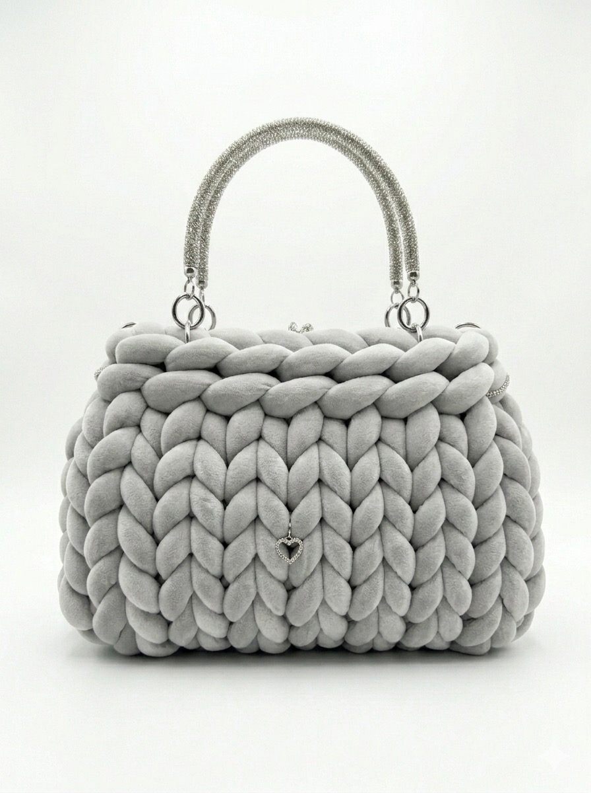
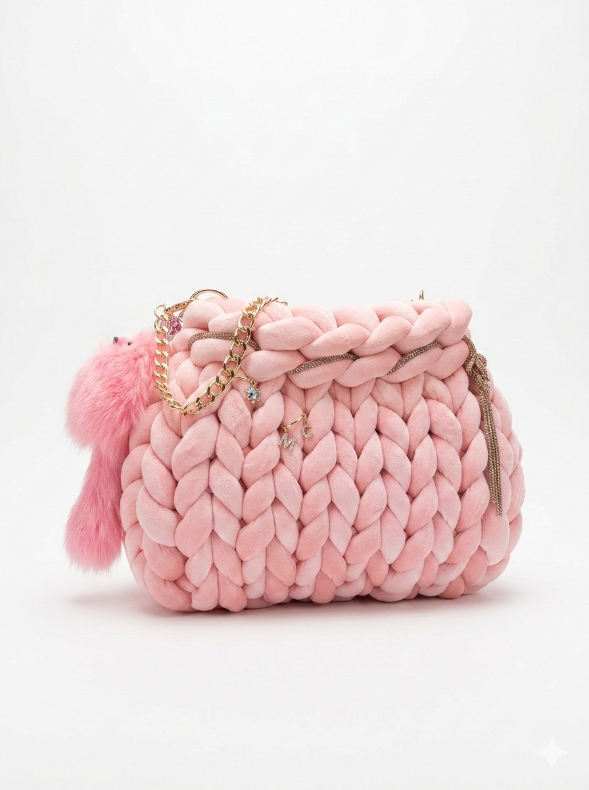
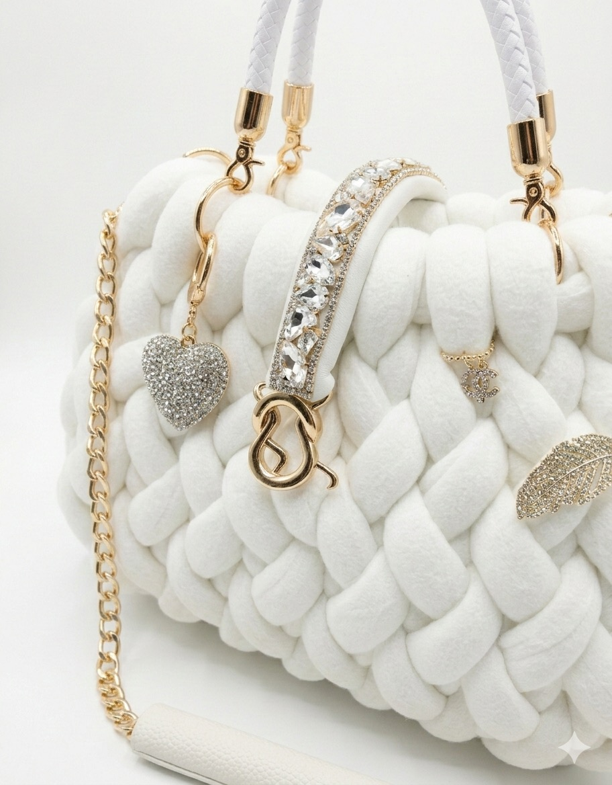

4 Ansichten
Bianco Amore
Creme-Weiß · Kristall-Charms · Goldkette
249 €
Handmade in Italy · con amore
Liebevoll von Hand gefertigte Taschen aus weichem Chunky-Knit-Garn – veredelt mit funkelnden Kristall-Charms und goldenen Ketten. Ein Kuss aus Italien für deinen Stil.
Jetzt entdecken
Limited EditionUnsere Kollektion
Vier Lieblingsstücke, handgestrickt und einzeln veredelt – wähle deine Farbe der Liebe.
Creme-Weiß · Kristall-Charms · Goldkette

2 AnsichtenSchwarz · Kristallketten · Goldkette

3 AnsichtenPerlgrau · Kristall-Henkel · Silberkette

2 AnsichtenZartes Rosa · Kristall-Charms · Goldkette

Über uns
Baci Bags ist eine kleine italienische Manufaktur, in der jede Tasche Masche für Masche von Hand entsteht. „Baci“ bedeutet „Küsse“ – und genau so viel Zuneigung steckt in jedem einzelnen Stück.
Wir verwenden ausschließlich besonders weiches, hochwertiges Chunky-Knit-Garn und veredeln jede Tasche mit handgesetzten Kristall-Charms sowie Ketten in Gold und Silber. So wird aus reiner Handwerkskunst ein kleines Luxus-Accessoire.
— Fatto a mano, con amore. 💋
Warum Baci Bags
Jede Tasche wird einzeln von Hand gestrickt – kein Stück gleicht dem anderen.
Entworfen und gefertigt in Italien, mit echter Leidenschaft fürs Detail.
Nur in kleinen Mengen verfügbar – exklusiv und immer ein Unikat.
Weiches Garn, funkelnde Kristalle und edle Ketten in Gold und Silber.
Kontakt
Du hast eine Frage, einen Sonderwunsch oder möchtest dein eigenes Unikat? Wir freuen uns auf deine Nachricht.
@bacibags